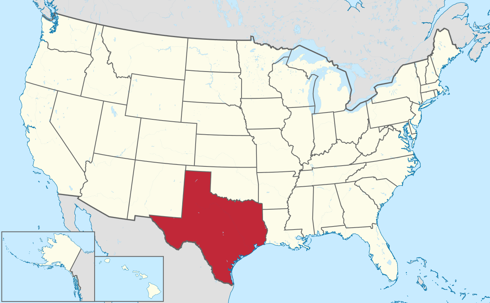

Facts about Texas
- Population: 30,503,301
- Year Incorporated: 1821
- Region: South Central
- Capital: Austin
- Largest City: Houston
- Income Rank: 22nd
| Geology | Wildlife | Climate |
|---|---|---|
| Palo Duro | Mammals | Storms |
| Franklin Mountains State Park | Reptiles | Greenhouse gases |
| Big Bend National Park | Amphibians | Administrative divisions |